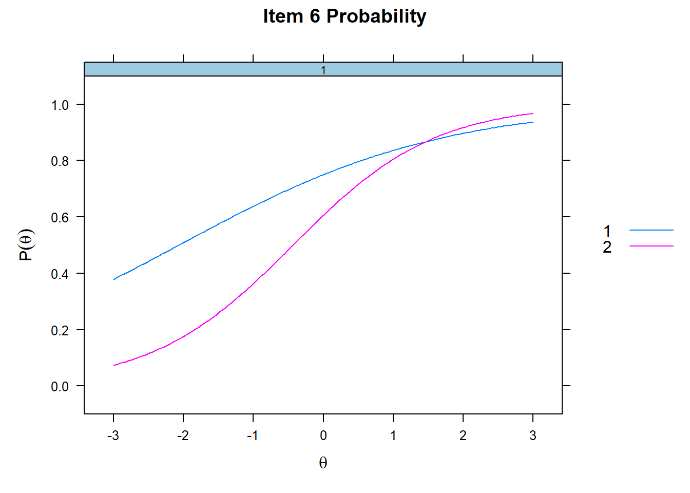
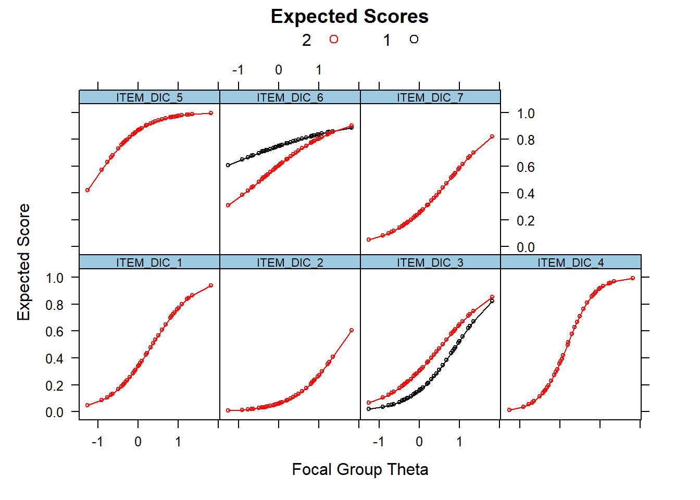
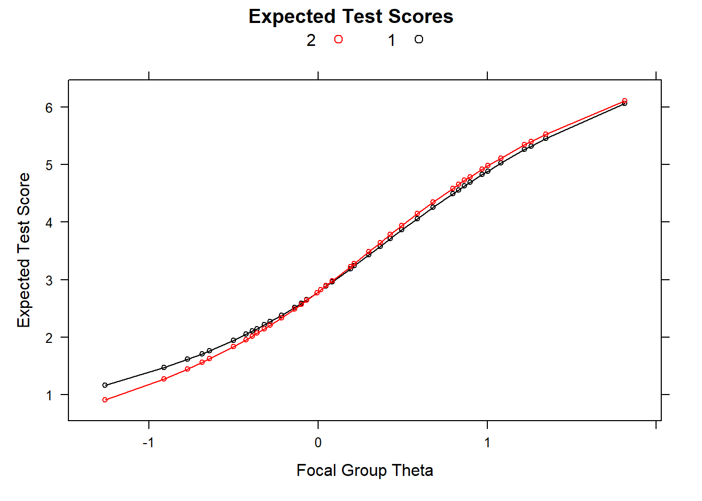

Differential Item Functioning per modelli dicotomici
All’interno del framework dell’Item Response Theory (IRT) è anche possibile studiare l’invarianza di una scala a livello dell’Item, tramite la procedura del Differential Item Functioning (DIF). Esitono diversi approcci al DIF, fra i quali il metodo Mantzel-Haenszel (Mantzel, & Haenszel, 1959; Holland, & Thayer,1988), la regressione logistica (Swaminathan, & Rogers, 1990) e il Likelihood Ratio Test (Thissen et al., 1988). Di seguito approfondiremo quest’ultimo.
Per illustrare il DIF utilizzeremo il database TEST.DIC. Condurremo lo studio dell’invarianza di genere utilizzando la variabile sex (1=male; 2=female).
Per prima cosa selezioniamo la variabile gruppo.
Selezioniamo poi gli item sui quali condurre l’invarianza.
Definiamo poi la struttura fattoriale, come già fatto in precedenza.
Infine, creiamo un oggetto contenente il tipo di modello, per non doverlo inserire in ogni passaggio.
Stima dei parametri nei due gruppi
Procediamo alla stima dei parametri degli item nel gruppo di maschi (GRUPPO==1).
mod.group1<-filter(item.DIF, GRUPPO=='1')%>% #inserire etichetta primo gruppo
mirt(model=fct.str.DIF, itemtype = tipo.mod) #es: GRUPPO == '1'##
Iteration: 1, Log-Lik: -843.738, Max-Change: 0.61586
Iteration: 2, Log-Lik: -821.640, Max-Change: 0.44042
Iteration: 3, Log-Lik: -814.473, Max-Change: 0.28525
Iteration: 4, Log-Lik: -812.296, Max-Change: 0.17850
Iteration: 5, Log-Lik: -811.599, Max-Change: 0.11333
Iteration: 6, Log-Lik: -811.361, Max-Change: 0.07228
Iteration: 7, Log-Lik: -811.248, Max-Change: 0.03180
Iteration: 8, Log-Lik: -811.234, Max-Change: 0.02210
Iteration: 9, Log-Lik: -811.229, Max-Change: 0.01378
Iteration: 10, Log-Lik: -811.226, Max-Change: 0.00758
Iteration: 11, Log-Lik: -811.225, Max-Change: 0.00510
Iteration: 12, Log-Lik: -811.224, Max-Change: 0.00357
Iteration: 13, Log-Lik: -811.224, Max-Change: 0.00131
Iteration: 14, Log-Lik: -811.224, Max-Change: 0.00123
Iteration: 15, Log-Lik: -811.224, Max-Change: 0.00046
Iteration: 16, Log-Lik: -811.224, Max-Change: 0.00040
Iteration: 17, Log-Lik: -811.224, Max-Change: 0.00034
Iteration: 18, Log-Lik: -811.224, Max-Change: 0.00029
Iteration: 19, Log-Lik: -811.224, Max-Change: 0.00021
Iteration: 20, Log-Lik: -811.224, Max-Change: 0.00019
Iteration: 21, Log-Lik: -811.224, Max-Change: 0.00017
Iteration: 22, Log-Lik: -811.224, Max-Change: 0.00015
Iteration: 23, Log-Lik: -811.224, Max-Change: 0.00014
Iteration: 24, Log-Lik: -811.224, Max-Change: 0.00012
Iteration: 25, Log-Lik: -811.224, Max-Change: 0.00011
Iteration: 26, Log-Lik: -811.224, Max-Change: 0.00010
Iteration: 27, Log-Lik: -811.224, Max-Change: 0.00009## $items
## a b g u
## ITEM_DIC_1 2.694 0.328 0 1
## ITEM_DIC_2 1.583 1.532 0 1
## ITEM_DIC_3 1.782 0.944 0 1
## ITEM_DIC_4 2.165 0.234 0 1
## ITEM_DIC_5 1.717 -1.063 0 1
## ITEM_DIC_6 0.592 -1.879 0 1
## ITEM_DIC_7 1.289 0.790 0 1
##
## $means
## F1
## 0
##
## $cov
## F1
## F1 1Stimiamo poi i parametri nel gruppo delle femmine (GRUPPO==2).
mod.group2<-filter(item.DIF, GRUPPO=='2')%>% #inserire etichetta secondo gruppo
mirt(model=fct.str.DIF, itemtype = tipo.mod) #es: GRUPPO == '2'##
Iteration: 1, Log-Lik: -694.990, Max-Change: 0.82420
Iteration: 2, Log-Lik: -674.419, Max-Change: 0.66239
Iteration: 3, Log-Lik: -667.961, Max-Change: 0.50617
Iteration: 4, Log-Lik: -665.768, Max-Change: 0.38798
Iteration: 5, Log-Lik: -664.889, Max-Change: 0.30633
Iteration: 6, Log-Lik: -664.484, Max-Change: 0.24955
Iteration: 7, Log-Lik: -664.024, Max-Change: 0.11400
Iteration: 8, Log-Lik: -663.991, Max-Change: 0.10336
Iteration: 9, Log-Lik: -663.968, Max-Change: 0.09343
Iteration: 10, Log-Lik: -663.906, Max-Change: 0.04630
Iteration: 11, Log-Lik: -663.902, Max-Change: 0.04024
Iteration: 12, Log-Lik: -663.900, Max-Change: 0.03196
Iteration: 13, Log-Lik: -663.895, Max-Change: 0.02119
Iteration: 14, Log-Lik: -663.895, Max-Change: 0.02255
Iteration: 15, Log-Lik: -663.894, Max-Change: 0.01832
Iteration: 16, Log-Lik: -663.892, Max-Change: 0.01618
Iteration: 17, Log-Lik: -663.892, Max-Change: 0.01486
Iteration: 18, Log-Lik: -663.892, Max-Change: 0.01147
Iteration: 19, Log-Lik: -663.891, Max-Change: 0.01189
Iteration: 20, Log-Lik: -663.891, Max-Change: 0.00638
Iteration: 21, Log-Lik: -663.891, Max-Change: 0.00039
Iteration: 22, Log-Lik: -663.891, Max-Change: 0.00039
Iteration: 23, Log-Lik: -663.891, Max-Change: 0.00538
Iteration: 24, Log-Lik: -663.891, Max-Change: 0.00185
Iteration: 25, Log-Lik: -663.891, Max-Change: 0.00036
Iteration: 26, Log-Lik: -663.891, Max-Change: 0.00183
Iteration: 27, Log-Lik: -663.891, Max-Change: 0.00538
Iteration: 28, Log-Lik: -663.891, Max-Change: 0.00040
Iteration: 29, Log-Lik: -663.891, Max-Change: 0.00166
Iteration: 30, Log-Lik: -663.891, Max-Change: 0.00485
Iteration: 31, Log-Lik: -663.891, Max-Change: 0.00034
Iteration: 32, Log-Lik: -663.891, Max-Change: 0.00030
Iteration: 33, Log-Lik: -663.891, Max-Change: 0.00416
Iteration: 34, Log-Lik: -663.891, Max-Change: 0.00144
Iteration: 35, Log-Lik: -663.891, Max-Change: 0.00075
Iteration: 36, Log-Lik: -663.891, Max-Change: 0.00030
Iteration: 37, Log-Lik: -663.891, Max-Change: 0.00028
Iteration: 38, Log-Lik: -663.891, Max-Change: 0.00141
Iteration: 39, Log-Lik: -663.891, Max-Change: 0.00040
Iteration: 40, Log-Lik: -663.891, Max-Change: 0.00028
Iteration: 41, Log-Lik: -663.891, Max-Change: 0.00138
Iteration: 42, Log-Lik: -663.891, Max-Change: 0.00049
Iteration: 43, Log-Lik: -663.891, Max-Change: 0.00027
Iteration: 44, Log-Lik: -663.891, Max-Change: 0.00135
Iteration: 45, Log-Lik: -663.891, Max-Change: 0.00056
Iteration: 46, Log-Lik: -663.891, Max-Change: 0.00027
Iteration: 47, Log-Lik: -663.891, Max-Change: 0.00132
Iteration: 48, Log-Lik: -663.891, Max-Change: 0.00058
Iteration: 49, Log-Lik: -663.891, Max-Change: 0.00026
Iteration: 50, Log-Lik: -663.891, Max-Change: 0.00129
Iteration: 51, Log-Lik: -663.891, Max-Change: 0.00058
Iteration: 52, Log-Lik: -663.891, Max-Change: 0.00025
Iteration: 53, Log-Lik: -663.891, Max-Change: 0.00126
Iteration: 54, Log-Lik: -663.891, Max-Change: 0.00058
Iteration: 55, Log-Lik: -663.891, Max-Change: 0.00025
Iteration: 56, Log-Lik: -663.891, Max-Change: 0.00124
Iteration: 57, Log-Lik: -663.891, Max-Change: 0.00057
Iteration: 58, Log-Lik: -663.891, Max-Change: 0.00024
Iteration: 59, Log-Lik: -663.891, Max-Change: 0.00121
Iteration: 60, Log-Lik: -663.891, Max-Change: 0.00056
Iteration: 61, Log-Lik: -663.891, Max-Change: 0.00024
Iteration: 62, Log-Lik: -663.891, Max-Change: 0.00118
Iteration: 63, Log-Lik: -663.891, Max-Change: 0.00055
Iteration: 64, Log-Lik: -663.891, Max-Change: 0.00023
Iteration: 65, Log-Lik: -663.891, Max-Change: 0.00116
Iteration: 66, Log-Lik: -663.891, Max-Change: 0.00054
Iteration: 67, Log-Lik: -663.891, Max-Change: 0.00023
Iteration: 68, Log-Lik: -663.891, Max-Change: 0.00113
Iteration: 69, Log-Lik: -663.891, Max-Change: 0.00053
Iteration: 70, Log-Lik: -663.891, Max-Change: 0.00022
Iteration: 71, Log-Lik: -663.891, Max-Change: 0.00111
Iteration: 72, Log-Lik: -663.891, Max-Change: 0.00052
Iteration: 73, Log-Lik: -663.891, Max-Change: 0.00022
Iteration: 74, Log-Lik: -663.891, Max-Change: 0.00109
Iteration: 75, Log-Lik: -663.891, Max-Change: 0.00051
Iteration: 76, Log-Lik: -663.891, Max-Change: 0.00021
Iteration: 77, Log-Lik: -663.891, Max-Change: 0.00106
Iteration: 78, Log-Lik: -663.891, Max-Change: 0.00049
Iteration: 79, Log-Lik: -663.891, Max-Change: 0.00021
Iteration: 80, Log-Lik: -663.891, Max-Change: 0.00104
Iteration: 81, Log-Lik: -663.891, Max-Change: 0.00048
Iteration: 82, Log-Lik: -663.891, Max-Change: 0.00021
Iteration: 83, Log-Lik: -663.891, Max-Change: 0.00102
Iteration: 84, Log-Lik: -663.891, Max-Change: 0.00047
Iteration: 85, Log-Lik: -663.891, Max-Change: 0.00020
Iteration: 86, Log-Lik: -663.891, Max-Change: 0.00100
Iteration: 87, Log-Lik: -663.891, Max-Change: 0.00046
Iteration: 88, Log-Lik: -663.891, Max-Change: 0.00020
Iteration: 89, Log-Lik: -663.891, Max-Change: 0.00098
Iteration: 90, Log-Lik: -663.891, Max-Change: 0.00045
Iteration: 91, Log-Lik: -663.891, Max-Change: 0.00019
Iteration: 92, Log-Lik: -663.891, Max-Change: 0.00096
Iteration: 93, Log-Lik: -663.891, Max-Change: 0.00045
Iteration: 94, Log-Lik: -663.891, Max-Change: 0.00019
Iteration: 95, Log-Lik: -663.891, Max-Change: 0.00094
Iteration: 96, Log-Lik: -663.891, Max-Change: 0.00044
Iteration: 97, Log-Lik: -663.891, Max-Change: 0.00018
Iteration: 98, Log-Lik: -663.891, Max-Change: 0.00092
Iteration: 99, Log-Lik: -663.891, Max-Change: 0.00043
Iteration: 100, Log-Lik: -663.891, Max-Change: 0.00018
Iteration: 101, Log-Lik: -663.891, Max-Change: 0.00090
Iteration: 102, Log-Lik: -663.891, Max-Change: 0.00042
Iteration: 103, Log-Lik: -663.891, Max-Change: 0.00018
Iteration: 104, Log-Lik: -663.891, Max-Change: 0.00088
Iteration: 105, Log-Lik: -663.891, Max-Change: 0.00041
Iteration: 106, Log-Lik: -663.891, Max-Change: 0.00017
Iteration: 107, Log-Lik: -663.891, Max-Change: 0.00086
Iteration: 108, Log-Lik: -663.891, Max-Change: 0.00040
Iteration: 109, Log-Lik: -663.891, Max-Change: 0.00017
Iteration: 110, Log-Lik: -663.891, Max-Change: 0.00084
Iteration: 111, Log-Lik: -663.891, Max-Change: 0.00039
Iteration: 112, Log-Lik: -663.891, Max-Change: 0.00017
Iteration: 113, Log-Lik: -663.891, Max-Change: 0.00083
Iteration: 114, Log-Lik: -663.891, Max-Change: 0.00038
Iteration: 115, Log-Lik: -663.891, Max-Change: 0.00016
Iteration: 116, Log-Lik: -663.891, Max-Change: 0.00081
Iteration: 117, Log-Lik: -663.891, Max-Change: 0.00038
Iteration: 118, Log-Lik: -663.891, Max-Change: 0.00016
Iteration: 119, Log-Lik: -663.891, Max-Change: 0.00079
Iteration: 120, Log-Lik: -663.891, Max-Change: 0.00037
Iteration: 121, Log-Lik: -663.891, Max-Change: 0.00016
Iteration: 122, Log-Lik: -663.891, Max-Change: 0.00078
Iteration: 123, Log-Lik: -663.891, Max-Change: 0.00036
Iteration: 124, Log-Lik: -663.891, Max-Change: 0.00015
Iteration: 125, Log-Lik: -663.891, Max-Change: 0.00076
Iteration: 126, Log-Lik: -663.891, Max-Change: 0.00035
Iteration: 127, Log-Lik: -663.891, Max-Change: 0.00015
Iteration: 128, Log-Lik: -663.891, Max-Change: 0.00074
Iteration: 129, Log-Lik: -663.891, Max-Change: 0.00035
Iteration: 130, Log-Lik: -663.891, Max-Change: 0.00015
Iteration: 131, Log-Lik: -663.891, Max-Change: 0.00073
Iteration: 132, Log-Lik: -663.891, Max-Change: 0.00034
Iteration: 133, Log-Lik: -663.891, Max-Change: 0.00014
Iteration: 134, Log-Lik: -663.891, Max-Change: 0.00071
Iteration: 135, Log-Lik: -663.891, Max-Change: 0.00033
Iteration: 136, Log-Lik: -663.891, Max-Change: 0.00014
Iteration: 137, Log-Lik: -663.891, Max-Change: 0.00070
Iteration: 138, Log-Lik: -663.891, Max-Change: 0.00032
Iteration: 139, Log-Lik: -663.891, Max-Change: 0.00014
Iteration: 140, Log-Lik: -663.891, Max-Change: 0.00068
Iteration: 141, Log-Lik: -663.891, Max-Change: 0.00032
Iteration: 142, Log-Lik: -663.891, Max-Change: 0.00014
Iteration: 143, Log-Lik: -663.891, Max-Change: 0.00067
Iteration: 144, Log-Lik: -663.891, Max-Change: 0.00031
Iteration: 145, Log-Lik: -663.891, Max-Change: 0.00013
Iteration: 146, Log-Lik: -663.891, Max-Change: 0.00066
Iteration: 147, Log-Lik: -663.891, Max-Change: 0.00031
Iteration: 148, Log-Lik: -663.891, Max-Change: 0.00013
Iteration: 149, Log-Lik: -663.891, Max-Change: 0.00064
Iteration: 150, Log-Lik: -663.891, Max-Change: 0.00030
Iteration: 151, Log-Lik: -663.891, Max-Change: 0.00013
Iteration: 152, Log-Lik: -663.891, Max-Change: 0.00063
Iteration: 153, Log-Lik: -663.891, Max-Change: 0.00029
Iteration: 154, Log-Lik: -663.891, Max-Change: 0.00012
Iteration: 155, Log-Lik: -663.891, Max-Change: 0.00062
Iteration: 156, Log-Lik: -663.891, Max-Change: 0.00029
Iteration: 157, Log-Lik: -663.891, Max-Change: 0.00012
Iteration: 158, Log-Lik: -663.891, Max-Change: 0.00061
Iteration: 159, Log-Lik: -663.891, Max-Change: 0.00028
Iteration: 160, Log-Lik: -663.891, Max-Change: 0.00012
Iteration: 161, Log-Lik: -663.891, Max-Change: 0.00059
Iteration: 162, Log-Lik: -663.891, Max-Change: 0.00028
Iteration: 163, Log-Lik: -663.891, Max-Change: 0.00012
Iteration: 164, Log-Lik: -663.891, Max-Change: 0.00058
Iteration: 165, Log-Lik: -663.891, Max-Change: 0.00027
Iteration: 166, Log-Lik: -663.891, Max-Change: 0.00011
Iteration: 167, Log-Lik: -663.891, Max-Change: 0.00057
Iteration: 168, Log-Lik: -663.891, Max-Change: 0.00026
Iteration: 169, Log-Lik: -663.891, Max-Change: 0.00011
Iteration: 170, Log-Lik: -663.891, Max-Change: 0.00056
Iteration: 171, Log-Lik: -663.891, Max-Change: 0.00026
Iteration: 172, Log-Lik: -663.891, Max-Change: 0.00011
Iteration: 173, Log-Lik: -663.891, Max-Change: 0.00055
Iteration: 174, Log-Lik: -663.891, Max-Change: 0.00025
Iteration: 175, Log-Lik: -663.891, Max-Change: 0.00011
Iteration: 176, Log-Lik: -663.891, Max-Change: 0.00054
Iteration: 177, Log-Lik: -663.891, Max-Change: 0.00025
Iteration: 178, Log-Lik: -663.891, Max-Change: 0.00011
Iteration: 179, Log-Lik: -663.891, Max-Change: 0.00052
Iteration: 180, Log-Lik: -663.891, Max-Change: 0.00024
Iteration: 181, Log-Lik: -663.891, Max-Change: 0.00010
Iteration: 182, Log-Lik: -663.891, Max-Change: 0.00051
Iteration: 183, Log-Lik: -663.891, Max-Change: 0.00024
Iteration: 184, Log-Lik: -663.891, Max-Change: 0.00010
Iteration: 185, Log-Lik: -663.891, Max-Change: 0.00050
Iteration: 186, Log-Lik: -663.891, Max-Change: 0.00023
Iteration: 187, Log-Lik: -663.891, Max-Change: 0.00010## $items
## a b g u
## ITEM_DIC_1 1.296 0.102 0 1
## ITEM_DIC_2 2.488 1.273 0 1
## ITEM_DIC_3 1.366 0.347 0 1
## ITEM_DIC_4 5.669 -0.074 0 1
## ITEM_DIC_5 1.653 -1.398 0 1
## ITEM_DIC_6 1.020 -0.671 0 1
## ITEM_DIC_7 1.437 0.541 0 1
##
## $means
## F1
## 0
##
## $cov
## F1
## F1 1Primo step della procedura di purificazione
Il primo step della procedura di purificazione prevede di stimare un modello di partenza dove tutti i parametri degli item sono vincolati ad essere uguali nei due gruppi. Inoltre, le medie e le varianze vengono fissate a 0 e 1 nel primo gruppo (gruppo di riferimento) e lasciate libere di essere stimate nel secondo gruppo (gruppo focale).
La funzione che permette di creare questo modello è denominata multiplegroup(). L’argomento invariance() permette di impostare i vincoli sopra esposti. Tramite colnames(item.DIF) imponiamo i vincoli ai parametri degl item, mentre tramite 'free_means' e 'free_var' impostiamo i vincoli alle medie e alle varianze.
mod.dif.1<- multipleGroup(item.DIF,model= fct.str.DIF,
itemtype = tipo.mod,
group =GRUPPO,SE=TRUE,
invariance = c(colnames(item.DIF),
'free_means', 'free_var'))## NA values in group removed, along with associated rows in data##
Iteration: 1, Log-Lik: -1552.108, Max-Change: 0.60151
Iteration: 2, Log-Lik: -1506.706, Max-Change: 0.41758
Iteration: 3, Log-Lik: -1496.243, Max-Change: 0.26373
Iteration: 4, Log-Lik: -1493.722, Max-Change: 0.17436
Iteration: 5, Log-Lik: -1492.739, Max-Change: 0.12205
Iteration: 6, Log-Lik: -1492.193, Max-Change: 0.08904
Iteration: 7, Log-Lik: -1491.607, Max-Change: 0.06614
Iteration: 8, Log-Lik: -1491.381, Max-Change: 0.03897
Iteration: 9, Log-Lik: -1491.272, Max-Change: 0.02826
Iteration: 10, Log-Lik: -1491.162, Max-Change: 0.03725
Iteration: 11, Log-Lik: -1491.086, Max-Change: 0.02077
Iteration: 12, Log-Lik: -1491.056, Max-Change: 0.01477
Iteration: 13, Log-Lik: -1491.028, Max-Change: 0.01621
Iteration: 14, Log-Lik: -1491.012, Max-Change: 0.01041
Iteration: 15, Log-Lik: -1491.003, Max-Change: 0.00799
Iteration: 16, Log-Lik: -1490.997, Max-Change: 0.01339
Iteration: 17, Log-Lik: -1490.985, Max-Change: 0.00666
Iteration: 18, Log-Lik: -1490.983, Max-Change: 0.00439
Iteration: 19, Log-Lik: -1490.981, Max-Change: 0.00353
Iteration: 20, Log-Lik: -1490.980, Max-Change: 0.00279
Iteration: 21, Log-Lik: -1490.979, Max-Change: 0.00234
Iteration: 22, Log-Lik: -1490.979, Max-Change: 0.00461
Iteration: 23, Log-Lik: -1490.977, Max-Change: 0.00217
Iteration: 24, Log-Lik: -1490.977, Max-Change: 0.00137
Iteration: 25, Log-Lik: -1490.977, Max-Change: 0.00101
Iteration: 26, Log-Lik: -1490.976, Max-Change: 0.00083
Iteration: 27, Log-Lik: -1490.976, Max-Change: 0.00070
Iteration: 28, Log-Lik: -1490.976, Max-Change: 0.00141
Iteration: 29, Log-Lik: -1490.976, Max-Change: 0.00067
Iteration: 30, Log-Lik: -1490.976, Max-Change: 0.00043
Iteration: 31, Log-Lik: -1490.976, Max-Change: 0.00032
Iteration: 32, Log-Lik: -1490.976, Max-Change: 0.00026
Iteration: 33, Log-Lik: -1490.976, Max-Change: 0.00022
Iteration: 34, Log-Lik: -1490.976, Max-Change: 0.00046
Iteration: 35, Log-Lik: -1490.976, Max-Change: 0.00021
Iteration: 36, Log-Lik: -1490.976, Max-Change: 0.00013
Iteration: 37, Log-Lik: -1490.976, Max-Change: 0.00010
##
## Calculating information matrix...A partire da questo modello, è possibile stimare il DIF al primo step di interazione tramite la funzione DIF(). Impostando la voce scheme=‘drop’, procediamo rimuovendo i vincoli degli item uno ad uno per essere confrontati tramite il Chi-Quadro nei due gruppi.
La stima del DIF viene eseguita prima nei parametri relativi alla capacità discriminativa (a), inserendo la voce which.par = 'a1' (Il parametro “a” è indicato sempre come “a1” in mirt).
## converged AIC SABIC HQ BIC X2 df p
## ITEM_DIC_1 TRUE -2.398 -1.570 -0.814 1.603 4.398 1 0.036
## ITEM_DIC_2 TRUE 1.058 1.886 2.642 5.059 0.942 1 0.332
## ITEM_DIC_3 TRUE 0.876 1.705 2.460 4.878 1.124 1 0.289
## ITEM_DIC_4 TRUE -0.730 0.099 0.854 3.272 2.73 1 0.099
## ITEM_DIC_5 TRUE 1.756 2.584 3.340 5.757 0.244 1 0.621
## ITEM_DIC_6 TRUE -0.528 0.301 1.056 3.474 2.528 1 0.112
## ITEM_DIC_7 TRUE 1.874 2.703 3.458 5.876 0.126 1 0.723Per proseguire poi con la stima del DIF relativo alla location. In questo caso, in which.par inseriremo il parametro d (easiness) e non b, poiché è il parametro di default utilizzato da mirt per la location.
## converged AIC SABIC HQ BIC X2 df p
## ITEM_DIC_1 TRUE 1.992 2.820 3.576 5.993 0.008 1 0.929
## ITEM_DIC_2 TRUE -1.055 -0.226 0.529 2.947 3.055 1 0.081
## ITEM_DIC_3 TRUE -5.016 -4.188 -3.432 -1.015 7.016 1 0.008
## ITEM_DIC_4 TRUE 1.982 2.810 3.566 5.983 0.018 1 0.893
## ITEM_DIC_5 TRUE 1.809 2.637 3.393 5.810 0.191 1 0.662
## ITEM_DIC_6 TRUE -7.690 -6.862 -6.106 -3.689 9.69 1 0.002
## ITEM_DIC_7 TRUE 1.763 2.591 3.347 5.764 0.237 1 0.626Utilizzando come criterio p<.01, nessun item mostrava DIF in a. In b, invece, sia l’item 3 (\(X^2\)(1)=6.49 , p = .008) che l’item 6 (\(X^2\)(1)=10.32 , p < .001) risultavano avere un valore di p associato minore della soglia fissata .
Secondo step della procedura di purificazione
Il secondo step della procedura di purificazione serve per verificare l’effettiva presenza di DIF negli item che hanno manifestato DIF al primo step.
Gli item senza DIF sono denominati item ancora e vengono fissati uguali nei due gruppi. Definiamo quindi un oggetto che contenga gli item ancora. In questo caso, gli item ancora sono il primo, il secondo, il quarto e il quinto. Li inseriremo usando la loro posizione ordinale nell’oggetto denominato item.ancora.
#Definisco gli item ancora
itemnames <- colnames(item.DIF)
item.ancora<- itemnames[c(1,2,4,5,7)] #Inserire gli item ancora
print(item.ancora)## [1] "ITEM_DIC_1" "ITEM_DIC_2" "ITEM_DIC_4" "ITEM_DIC_5" "ITEM_DIC_7"Proseguiamo poi creando un oggetto che contenga gli item candidati, ovvero gli item che saranno lasciati liberi di variare nei due gruppi per verificare l’eventuale presenza di DIF.
#Definisco gi item da testare (candidati)
item.candidati<- c(3,6) #Inserire gli item candidati
print(item.candidati)## [1] 3 6Ora dobbiamo creare un nuovo modello tramite la funzione multiplegroup() con i seguenti vincoli allinterno dell’argomento invariance=c():
i parametri degli item ancora fissati ad essere uguali nei due gruppi;
le medie e le varianze fissate a 0 e 1 nel gruppo di rifermineto e libere di essere stimate nel gruppo focale.
mod.dif.2<-multipleGroup(item.DIF,model= fct.str.DIF,
itemtype = tipo.mod,
group =GRUPPO,SE=TRUE,
invariance = c(item.ancora, 'free_means', 'free_var'))## NA values in group removed, along with associated rows in data##
Iteration: 1, Log-Lik: -1552.108, Max-Change: 0.60151
Iteration: 2, Log-Lik: -1497.920, Max-Change: 0.41784
Iteration: 3, Log-Lik: -1487.696, Max-Change: 0.26985
Iteration: 4, Log-Lik: -1485.040, Max-Change: 0.18088
Iteration: 5, Log-Lik: -1483.998, Max-Change: 0.12779
Iteration: 6, Log-Lik: -1483.422, Max-Change: 0.09438
Iteration: 7, Log-Lik: -1482.794, Max-Change: 0.07145
Iteration: 8, Log-Lik: -1482.523, Max-Change: 0.04190
Iteration: 9, Log-Lik: -1482.379, Max-Change: 0.03181
Iteration: 10, Log-Lik: -1482.246, Max-Change: 0.05183
Iteration: 11, Log-Lik: -1482.087, Max-Change: 0.02505
Iteration: 12, Log-Lik: -1482.040, Max-Change: 0.01766
Iteration: 13, Log-Lik: -1481.997, Max-Change: 0.01905
Iteration: 14, Log-Lik: -1481.970, Max-Change: 0.01276
Iteration: 15, Log-Lik: -1481.952, Max-Change: 0.01035
Iteration: 16, Log-Lik: -1481.944, Max-Change: 0.02110
Iteration: 17, Log-Lik: -1481.911, Max-Change: 0.00927
Iteration: 18, Log-Lik: -1481.904, Max-Change: 0.00612
Iteration: 19, Log-Lik: -1481.899, Max-Change: 0.00509
Iteration: 20, Log-Lik: -1481.896, Max-Change: 0.00414
Iteration: 21, Log-Lik: -1481.894, Max-Change: 0.00358
Iteration: 22, Log-Lik: -1481.893, Max-Change: 0.00767
Iteration: 23, Log-Lik: -1481.888, Max-Change: 0.00340
Iteration: 24, Log-Lik: -1481.887, Max-Change: 0.00225
Iteration: 25, Log-Lik: -1481.887, Max-Change: 0.00184
Iteration: 26, Log-Lik: -1481.886, Max-Change: 0.00152
Iteration: 27, Log-Lik: -1481.886, Max-Change: 0.00132
Iteration: 28, Log-Lik: -1481.886, Max-Change: 0.00285
Iteration: 29, Log-Lik: -1481.885, Max-Change: 0.00127
Iteration: 30, Log-Lik: -1481.885, Max-Change: 0.00084
Iteration: 31, Log-Lik: -1481.885, Max-Change: 0.00069
Iteration: 32, Log-Lik: -1481.885, Max-Change: 0.00058
Iteration: 33, Log-Lik: -1481.885, Max-Change: 0.00050
Iteration: 34, Log-Lik: -1481.885, Max-Change: 0.00108
Iteration: 35, Log-Lik: -1481.885, Max-Change: 0.00049
Iteration: 36, Log-Lik: -1481.885, Max-Change: 0.00032
Iteration: 37, Log-Lik: -1481.884, Max-Change: 0.00027
Iteration: 38, Log-Lik: -1481.884, Max-Change: 0.00022
Iteration: 39, Log-Lik: -1481.884, Max-Change: 0.00019
Iteration: 40, Log-Lik: -1481.884, Max-Change: 0.00042
Iteration: 41, Log-Lik: -1481.884, Max-Change: 0.00019
Iteration: 42, Log-Lik: -1481.884, Max-Change: 0.00012
Iteration: 43, Log-Lik: -1481.884, Max-Change: 0.00011
Iteration: 44, Log-Lik: -1481.884, Max-Change: 0.00009
##
## Calculating information matrix...Procediamo poi con la stima del DIF. In questo caso, useremo lo schema ‘add’ in cui i parametri degli item vengono confrontati fra i due gruppi uno alla volta per poi essere vincolati e procedere con il seguente parametro.
Come prima, analizziamo il DIF in a.
#DIF in a al secondo step di purificazione
DIF(mod.dif.2,which.par = 'a1',
simplify = TRUE, scheme = 'add', items2test = item.candidati)## converged AIC SABIC HQ BIC X2 df p
## ITEM_DIC_3 TRUE 1.576 2.404 3.160 5.577 0.424 1 0.515
## ITEM_DIC_6 TRUE 0.124 0.953 1.708 4.126 1.876 1 0.171Per poi proseguire analizzando il DIF in b.
#DIF in b (d) al secondo step di purificazione
DIF(mod.dif.2,which.par = 'd',
simplify = TRUE, scheme = 'add', items2test = item.candidati)## converged AIC SABIC HQ BIC X2 df p
## ITEM_DIC_3 TRUE -3.502 -2.674 -1.918 0.499 5.502 1 0.019
## ITEM_DIC_6 TRUE -5.431 -4.603 -3.847 -1.430 7.431 1 0.006Al secondo step di purificazione, solo l’item 6 risultava avere DIF nel parametro b (\(X^2\)(1)=7.43 , p < .01), ad indicare che l’item era invariante per genere, poiché risultava essere più facile per i maschi (b=-1.02) rispetto alle femmine (b=-.59).
Questo può essere anche analizzato graficamente tramite la funzione itemplot() e inserendo nell’argomento item= la posizione ordinale dell’item che si desidera visualizzare.

Effect size del DIF
Come ultimo aspetto, è possibile studiare l’effect size del DIF utilizzando la procedura proposta da Meade (2010).
Effect size a livello di item
In primo luogo si valuta l’effect size a livello di item tramite la funzione empirical_ES().
## SIDS UIDS SIDN UIDN ESSD theta.of.max.D max.D mean.ES.foc mean.ES.ref
## item.1 0.000 0.000 0.000 0.000 0.000 -1.260 0.000 0.466 0.466
## item.2 0.000 0.000 0.000 0.000 0.000 -1.260 0.000 0.157 0.157
## item.3 0.113 0.113 0.107 0.107 0.465 0.429 0.161 0.409 0.297
## item.4 0.000 0.000 0.000 0.000 0.000 -1.260 0.000 0.516 0.516
## item.5 0.000 0.000 0.000 0.000 0.000 -1.260 0.000 0.842 0.842
## item.6 -0.124 0.125 -0.125 0.128 -0.929 -1.260 -0.299 0.641 0.765
## item.7 0.000 0.000 0.000 0.000 0.000 -1.260 0.000 0.362 0.362
Fra gli indici più utilizzati per lo studio del DIF vi sono i seguenti (Per un’analisi approdondita degli indici di Effect Size, consultare la guida di Meade).
Signed Item Difference in the Sample (SIDIS)
Rappresenta la differenza media, nella metrica dell’item, della differenza fra i due gruppi.
Unsigned Item Difference in the Sample (UIDIS)
Rappresenta la differenza media, nella metrica dell’item, della differenza fra i due gruppi in valore assoluto. Il valore assoluto permette di osservare la differenza media impedendo l’effetto cancellazione lungo il tratto di theta.
Utile è un confronto fra gli indici SIDIS e UIDIS. Se sono uguali, il DIF è di natura uniforme, quindi un gruppo ha livelli più alti dell’altro gruppo lungo tutto il continuum di theta (DIF uniforme). Se UIDIS è maggiore di SIDIS allora c’è effetto cancellazione lungo il continuum di theta, ad indicare che un gruppo non ha sempre punteggi più alti dell’altro (DIF non uniforme) e va analizzato il grafico per comprendere in quale regione di theta è presente il DIF.
Expected score standardized difference (ESSD)
Rappresenta la differenza fra la media degli Espected Score del primo gruppo con quelli del secondo gruppo, divisi per la deviazione standard della distribuzione. Si interpreta con i criteri del d di Cohen (1988) .
Effect size a livello di test
Per valutare l’impatto complessvo del DIF sulla scala, possiamo utilizzare degli indici forniti sempre da Meade (2010). Useremo, come sopra, la funzione empirical_ES(), introducendo però la voce DIF=FALSE.
## Effect Size Value
## 1 STDS -0.010939057
## 2 UTDS 0.237892250
## 3 UETSDS 0.092202120
## 4 ETSSD -0.007087746
## 5 Starks.DTFR -0.017710214
## 6 UDTFR 0.235673763
## 7 UETSDN 0.094939773
## 8 theta.of.max.test.D -1.260153402
## 9 Test.Dmax -0.251737668
I tre indici presentati di seguito sono l’applicazione di quanto appena visto per l’item a livello di test.
Signed Test Difference in the Sample (STDIS)
Differenza media, nella metrica del test, nella risposta fra i due gruppi.
Unsigned Test Difference in the Sample (UTDIS)
Differenza media, nella metrica del test, nella risposta fra i due gruppi senza l’effetto cancellazione.
Se messa in confronto con STIDS, è possibile cogliere la presenza di DIF uniforme/ non uniforme a livello di test.
Expected test score standardized difference (ETSSD)
Rappresenta la differenza fra la media degli Espected Test Score nei due gruppi, diviso per la deviazione standard. Si interpreta con i criteri del d di Cohen (1988) .